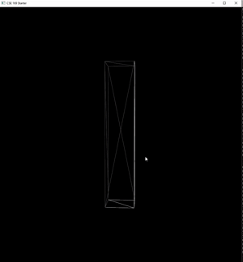
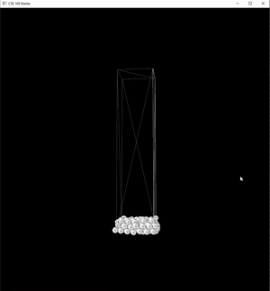
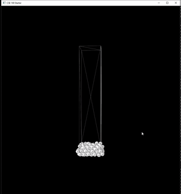
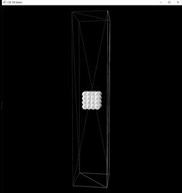
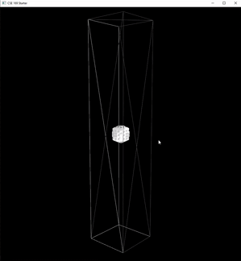
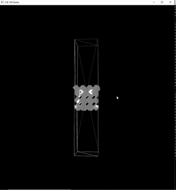

Smooth Particle Hydrodynamics Simulation
This is an implementation of an incompressible fluid dynamics simulation using the smoothed particle hydrodynamics (SPH) method. The basic approach is taken from the SPH Fluids in Computer Graphics paper written in 2014 by Ihmsen et al. I use this paper to calculate pressure and viscosity forces as well as handle boundary interactions. For the surface tension and Marching Cubes features of the simulation, I followed the approaches outlined in Versatile Surface Tension and Adhesion for SPH Fluids by Akinci et al. and Marching Cubes: A High Resolution 3D Surface Construction Algorithm by Lorenson and Cline.
Implementing Boundary and Pressure Forces
The first part of the simulation I implemented were the gravity and boundary forces. Once I was able to tune the boundary forces so that the particles did not fall out of the box, I slowly increased the pressure force until the particles were incompressible and did not slip through each other.
Viscosity
The next part of the simulation I implemented was the viscosity force. Here is a demonstration of a wave effect with one having much higher viscosity.
 Surface Tension
In order to implement the surface tension I had to balance the pressure and viscosity forces so that they were about equal in strength to the surface tension force. I found that it was hard to reach this equilibrium as often times the surface tension force would be strong and cause the particles to compress too much and slip between each other. If the surface tension force was too weak then the pressure force would dominate and the particles would just fly away from each other without forming a sphere.
 Marching Cubes
The Marching Cubes implementation was fairly straightforward. The following is a demo of the technique with a surface level value of 0.15. The video is sped up as the original simulation speed is very slow due to the limited performance of my computer at the time.
